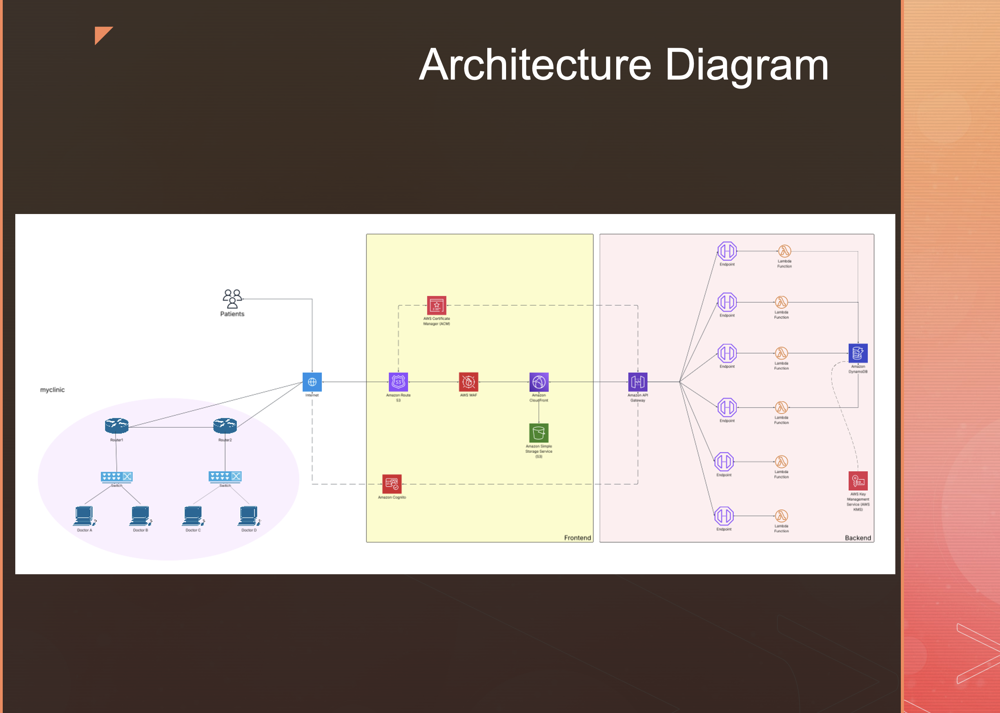

Routes traffic globally and accelerates static portal delivery with edge caching.
AWS cloud architecture & healthcare security
Secure serverless architecture for a patient portal.
MyClinic is a healthcare cloud architecture concept designed for secure patient access, appointment workflows, and authorized clinical updates. The solution uses AWS services to balance security, scalability, availability, and low operational overhead.
APIGateway
λLambda
DBDynamoDB
Route 53
CloudFront + S3
Cognito
WAF · KMS · ACM
Controls patient and staff authentication with managed identity flows.
Handles portal requests through serverless APIs and event-driven processing.
Adds perimeter filtering, encryption, and TLS certificate management.
Architecture layers
Designed like a secure healthcare system, not just a diagram.
Access & delivery layer
Route 53, CloudFront, and S3 provide reliable entry, fast static delivery, and a clean separation between public assets and protected application workflows.
Application layer
API Gateway exposes controlled endpoints while Lambda runs appointment, records, and clinical-update logic without maintaining servers.
Data layer
DynamoDB supports scalable patient and appointment data patterns, with KMS-backed encryption for sensitive information.
Security & governance layer
Cognito, IAM, ACM, WAF, and encryption controls protect identities, traffic, APIs, and stored data across the portal.
Security design
Controls mapped to healthcare data protection needs.
Separate patient and staff access paths with Cognito-managed authentication and role-aware API access.
Use KMS-backed encryption for sensitive records and secure transport with ACM-managed TLS certificates.
Use WAF filtering, API Gateway throttling patterns, and CloudFront edge delivery to reduce exposure.
Serverless services reduce patching burden while scaling automatically with patient portal traffic.
Original architecture diagram
A focused AWS service map for a secure patient portal.
A portfolio-ready view of the MyClinic cloud architecture, highlighting the services, security boundaries, and operational flow without overwhelming the page.

Architecture focus
Secure, serverless healthcare workflow
The architecture connects DNS, edge delivery, identity, APIs, compute, database, and encryption services into a simple patient-facing system with clear security responsibilities.
Route 53CloudFrontCognitoAPI GatewayLambdaDynamoDBKMSWAF
Patient access layer
Route 53, CloudFront, S3, ACM, and WAF create a fast, protected entry point for the web portal.
Application workflow
Cognito, API Gateway, and Lambda separate identity, request routing, and backend business logic.
Data protection
DynamoDB and KMS support encrypted storage patterns designed around sensitive healthcare records.